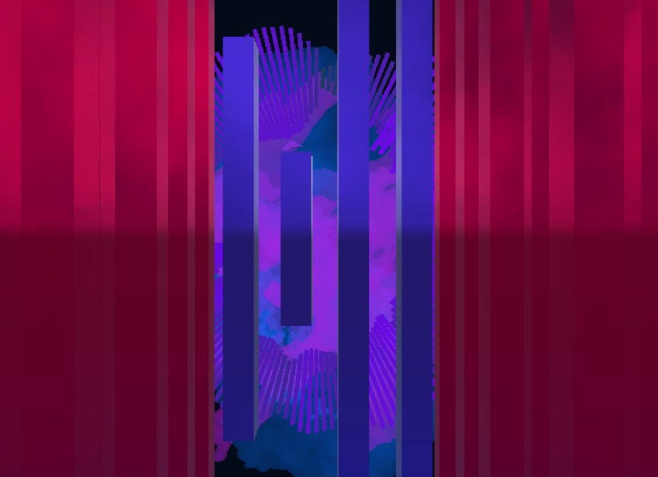

Audio Visualization for Anja - Taco Hemingway
Music can manifest itself in many ways. Personally, music can manifest itself to me in a visual way. With Unity, I aim to create an audio visual experience that directly relates to the music playing.
